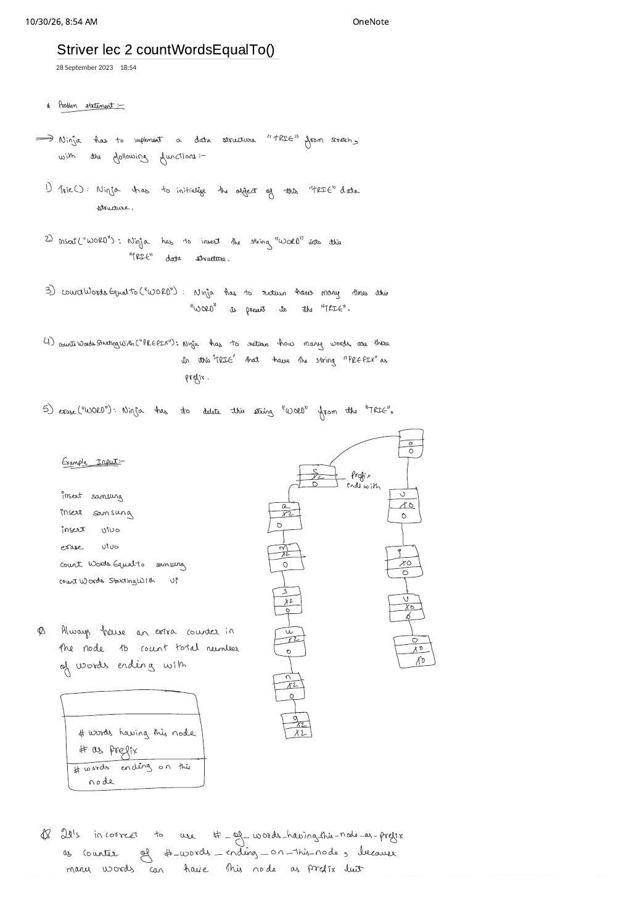

Implement Trie II: countWordsEqualTo, countWordsStartingWith & erase
Expanded from handwritten competitive coding study note: 04_Striver_lec_2_countWordsEqualTo.pdf
The standard boolean Trie from Striver Lecture 1 is a set: its bool flag only records whether a word is present or absent, making it impossible to count duplicate insertions or delete one copy of a word without corrupting shared prefixes. Striver Trie Lecture 2 (Coding Ninjas Implement Trie II / LeetCode 1804) upgrades the Trie into a prefix-aware multiset by replacing bool flag with two distinct integer counters inside every node.
1. Problem Statement — Five Operations from Scratch
Ninja's Multiplicity Trie Specification
Trie()— Initialize an empty Trie data structure.insert(word)— Insert one occurrence of lowercase stringwordinto the Trie.countWordsEqualTo(word)— Return how many times the exact stringwordis currently present in the Trie.countWordsStartingWith(prefix)— Return how many currently stored words (counting duplicates) haveprefixas a prefix.erase(word)— Delete one occurrence ofwordfrom the Trie.
2. Upgrading the Node: Why Two Separate Counters Are Mandatory
Every node in the Multiplicity Trie stores three compartments, exactly as drawn in the zoomed-in box on Page 1 of the handwritten note:
Node* links[26] = {nullptr}— 26 child pointers for'a'–'z'.int cntPrefix = 0("# words having this node as prefix") — incremented at every step as a word traverses through this node duringinsert, and decremented at every step duringerase.int cntEndWith = 0("# words ending on this node") — incremented only on the terminal node after all characters ofwordare parsed duringinsert, and decremented on that terminal node duringerase.
Handwritten Starred Pitfall: Never Conflate cntPrefix with cntEndWith!
Quoting the starred warning spanning Pages 1–2 of 04_Striver_lec_2_countWordsEqualTo.pdf:
"It's incorrect to use #_of_words_having_this_node_as_prefix as the counter of #_words_ending_on_this_node, because many words can have this node as prefix, but few (or none!) will end on this node."
For example, if you insert "samsung" twice and "sam" zero times, the node for "sam" has cntPrefix = 2, yet countWordsEqualTo("sam") must return cntEndWith = 0!
3. Handwritten Dry Run on "samsung" & "vivo"
Let us trace the exact 6-operation sequence and 3-compartment node evolution from Page 1 of the scan:
04_Striver_lec_2_countWordsEqualTo.pdf: "samsung" increments 1 → 2 along its chain, while erase("vivo") decrements 1 → 0 on v, i, v, o so countWordsStartingWith("vi") returns 0 even without freeing the nodes.Step-by-Step Operation Log
insert("samsung"): Creates nodess, a, m, s, u, n, gwithcntPrefix = 1on all 7 nodes andcntEndWith = 1on terminalg.insert("samsung"): Reuses all 7 existing nodes, updatingcntPrefix: 1 → 2on all 7 nodes andcntEndWith: 1 → 2ong.insert("vivo"): Creates nodesv, i, v, owithcntPrefix = 1on all 4 nodes andcntEndWith = 1on terminalo.erase("vivo"): Walksv → i → v → odecrementingcntPrefix($1 \to 0$) at each step, then decrementscntEndWith($1 \to 0$) on terminalo.countWordsEqualTo("samsung"): Walks togand returnsg->cntEndWith == 2.countWordsStartingWith("vi"): Walksv → iand returnsi->cntPrefix == 0! Notice whycountWordsStartingWithreturnscntPrefixrather than checking non-null pointers: even if lazy deletion leaves deadv → ipointers allocated in RAM,cntPrefix == 0tells us zero active words currently pass through"vi"!
4. Why Not Just Two unordered_map<string, int> Tables?
A common brute/better thought is maintaining exactCnt[word] and prefixCnt[word[0..k]] in hash maps. For a word of length $L$, hashing all $L$ prefixes word.substr(0, 1) ... word.substr(0, L) takes $\sum_{k=1}^{L} O(k) = O(L^2)$ time and $O(L^2)$ memory per insertion and deletion! The Multiplicity Trie updates all $L$ prefix counters in a single $O(L)$ walk with zero substring copies.
5. Clean C++ Implementation (Including Safe Erase + Memory Cleanup)
In competitive programming, decrementing cntPrefix and cntEndWith (logical deletion) is sufficient and fastest. In production systems with millions of churned strings, we can also physically deallocate a child node as soon as its cntPrefix drops to 0! Both defensive guards (ignoring erase(word) if word is not in the Trie) and physical cleanup are shown below:
#include <bits/stdc++.h>
using namespace std;
struct Node {
Node* links[26] = {nullptr};
int cntEndWith = 0; // # words ending on this node
int cntPrefix = 0; // # words having this node as prefix
bool containsKey(char ch) const { return links[ch - 'a'] != nullptr; }
Node* get(char ch) const { return links[ch - 'a']; }
void put(char ch, Node* node) { links[ch - 'a'] = node; }
void increaseEnd() { cntEndWith++; }
void increasePrefix() { cntPrefix++; }
void deleteEnd() { cntEndWith--; }
void reducePrefix() { cntPrefix--; }
};
class Trie {
private:
Node* root;
static void freeSubtree(Node* node) {
if (!node) return;
for (int i = 0; i < 26; i++) {
if (node->links[i]) freeSubtree(node->links[i]);
}
delete node;
}
public:
Trie() : root(new Node()) {}
void insert(string& word) {
Node* node = root;
for (char ch : word) {
if (!node->containsKey(ch)) {
node->put(ch, new Node());
}
node = node->get(ch);
node->increasePrefix();
}
node->increaseEnd();
}
int countWordsEqualTo(string& word) const {
Node* node = root;
for (char ch : word) {
if (!node->containsKey(ch)) return 0;
node = node->get(ch);
}
return node->cntEndWith;
}
int countWordsStartingWith(string& word) const {
Node* node = root;
for (char ch : word) {
if (!node->containsKey(ch)) return 0;
node = node->get(ch);
}
return node->cntPrefix;
}
void erase(string& word) {
// Defensive guard: never decrement counters if `word` isn't present!
if (countWordsEqualTo(word) == 0) return;
Node* node = root;
for (char ch : word) {
Node* nxt = node->get(ch);
nxt->reducePrefix();
// Optional physical memory reclamation when zero words use this branch:
if (nxt->cntPrefix == 0) {
node->put(ch, nullptr);
freeSubtree(nxt);
return;
}
node = nxt;
}
node->deleteEnd();
}
};6. Complexity Proof & Edge Cases
- Time Complexity: All four word/prefix methods (
insert,countWordsEqualTo,countWordsStartingWith, and logicalerase) traverse at most $L = |\text{word}|$ edges $\implies$ $O(L)$ per operation (with physical subtree pruning, each allocated node is deleted at most once across the entire lifetime of the Trie, soeraseremains $O(L)$ amortized!). - Space Complexity: $O(26 \cdot \sum |w_i|)$ across active words in the 26-pointer Trie node layout.
- Key Edge Cases:
- Erasing a prefix word while a longer word stays (e.g.,
insert("app"),insert("apple"),erase("app")): Alonga → p → p,cntPrefixdrops from $2 \to 1$ andp->cntEndWithdrops from $1 \to 0$, leaving"apple"completely intact (countWordsEqualTo("apple") == 1,countWordsStartingWith("app") == 1,countWordsEqualTo("app") == 0). - Erasing one duplicate of two (
insert("samsung")$\times 2$,erase("samsung")$\times 1$): Both counters drop from $2 \to 1$, so one copy remains. - Calling
eraseon a word that is only a prefix (e.g.,erase("sam")when only"samsung"was inserted): Caught byif (countWordsEqualTo(word) == 0) return;! Without this guard,erase("sam")would corrupt"samsung"'s prefix counts and drivecntEndWithnegative!
- Erasing a prefix word while a longer word stays (e.g.,
From the Handwritten Notes
View original handwritten page — Striver Lec 2 (Page 1: 5-Function Spec, samsung/vivo Counter Diagram & Dual-Counter Node)


samsung and vivo node trace, and zoomed-in node box showing # words having this node as prefix vs. # words ending on this node.